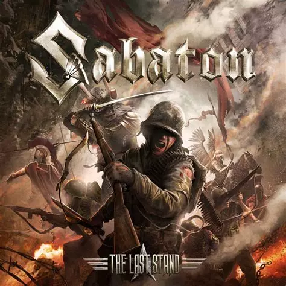
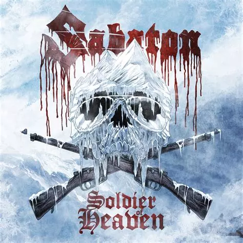
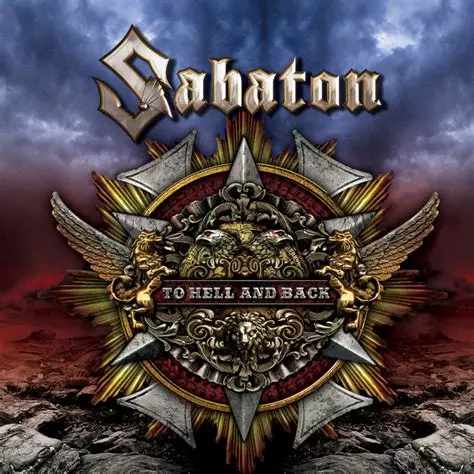
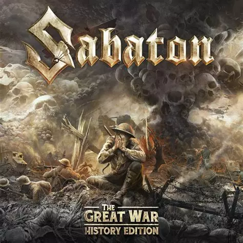

Accueil
Accueil
Sabaton
Les membres actuels de Sabaton incluent Joakim Brodén (chant), Pär Sundström (basse), Chris
Rörland
(guitare),
Hannes Van Dahl (batterie) et Thobbe Englund
(guitare).
BIO
Sabaton est un groupe de métal suédois formé en 1999 à Pärlby, une petite localité proche de Falun, en Suède. Le groupe est principalement connu pour ses chansons inspirées de l'histoire militaire, en particulier des guerres mondiales, des batailles célèbres et des événements historiques marquants. Sabaton se distingue par son mélange unique de heavy metal épique, de power metal et de métal mélodique. Le groupe a été fondé par Joakim Brodén (chant et claviers) et Pär Sundström (basse), qui sont toujours membres du groupe aujourd'hui. Au fil des ans, Sabaton a vu plusieurs changements dans sa formation, mais Brodén et Sundström en sont restés les piliers. Le groupe a été influencé par des groupes comme Iron Maiden, Judas Priest et Manowar, et ses paroles souvent héroïques et guerrières se sont fait rapidement une place dans le monde du métal. Sabaton est particulièrement connu pour son approche unique du métal, combinant des mélodies puissantes, des riffs accrocheurs et des textes célébrant les exploits militaires, tout en rendant hommage à ceux qui ont vécu ces événements
En savoir plusTop Titres
- The Last stand
 - The Attack of th dead Men

- Ghost Division

- Bismarck

- Night Witches

- Primo Victoria

- Carolus Rex

- Soldiers of Heaven
 - To Hell and Back

Dernières sorties
- "The War To End All Wars"
Sortie le 04/03/2022

- the great war
Sortie le 19/07/2019
 - The last stand
sortie le 19/08/2016
Albums
- The Last Stand
Sortie le 19/08/2016 Sabaton · The Last Stand - Carolus Rex
Sortie le 25/05/2012 - THE GREAT WAR
Sortie le 19/07/2019 - The War to End All Wars
Sortie le 04/03/2022
Artistes Similaire
- Powerwolf

- Dragonforce

- Blind Guardian

- Nightwish

- HammerFall

- Alestorm

- Ensiferum